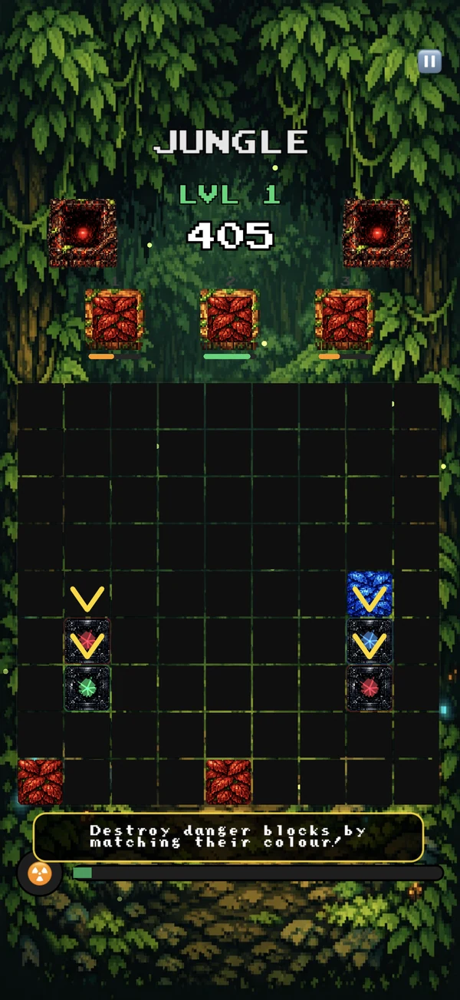
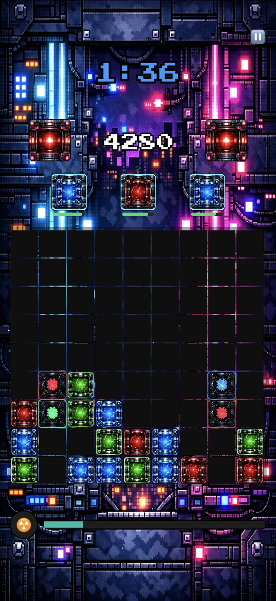

THE FULL GUIDE
How to play Bloxl
Everything you need, from your first block to the Daily Challenge leaderboard.

The basics
Bloxl is a block-matching puzzle game. Drag coloured blocks from your containers onto the grid and line up three or more of the same colour to clear them and score. At the start of each level a formation of danger blocks appears, each one waiting for a specific colour — match that colour next to one to damage it, three times to destroy it. Clear every danger block to reach the next level. Keep placing blocks next to matching colours to build a streak and multiply your score.
Drag a block from a container
Three containers sit above the grid, each holding one block. Drag a block out and place it anywhere empty on the board. The block lifts above your finger as you drag, so you can see the cell you're aiming at rather than covering it up. Empty a container and it reloads with a new colour a moment later.
Line up three of the same colour
Three or more blocks of the same colour touching each other — horizontally or vertically, in any shape — clear together and score. Bigger groups are worth disproportionately more: a four-block clear beats two threes. Diagonals don't count.
Build a streak
Every match extends your streak, and your streak multiplies every match you make. There's no cap, so it climbs as far as you can keep it going, with a bonus every fifth step. The catch is what breaks it: dropping a block somewhere that touches nothing useful — no matching colour, no danger block waiting for it — ends the streak instantly. A dead drop costs you nothing in points but everything in momentum, so there's real tension between placing safely and placing well.
Danger blocks
Danger blocks are the reason you're here. At the start of every level, a formation of them appears on the grid — the shape and position vary by level and theme, so you never quite settle into a routine. Each one is locked to a single colour, shown in its centre. Clear all of them and you advance.
They take three hits. Match their colour next to one and it takes damage; do it three times and it's destroyed. You can watch a block's health in its pulse — a full-health block beats slowly, and as it takes damage the pulse tightens, until a block one hit from death is flashing urgently. It's a health bar you read without looking away from the board.
Bombs are the shortcut. A bomb detonation deals a point of damage to every danger block in its blast, which is the only way to hurt one without matching its colour.
The catch is that danger blocks occupy space you need. They sit in the middle of the board taking up cells while the emitters either side of the grid keep firing new blocks onto it. The grid fills from the bottom, and if a block ever reaches the top row, the game is over. So every danger block is a piece of the board you can't use, and every level starts with more of them in your way.
And the emitters don't wait. They charge faster as the levels climb — and faster still the quicker you clear, so playing well doesn't buy you room to breathe. It just changes what the pressure feels like.

The six worlds
Bloxl moves through six worlds, and you'll see a new one every three levels. Jungle, then Ocean, Lava, Space, Cyber, and finally Cosmos. Each has its own blocks, backgrounds, containers and emitters — nothing is reused between them.
Each world also has three backgrounds of its own, one per level, so the scene shifts under you even before the world changes. Jungle darkens as you go. Ocean takes you down. Lava gets closer to the fire.
The change isn't only cosmetic. Every world brings its own music, its own danger block formations, and its own block art — so the board you're reading at level 13 doesn't look or sound like the board you learned on at level 1. The rules never change. Everything around them does.
Cosmos arrives at level 16, and it's where you stay. There's no seventh world and no ending — the levels keep counting up, the emitters keep charging faster, and eventually the grid will fill. Everyone loses. The only question is when.



Power-ups
Three things break the normal rules. None of them arrive on demand — you take them when they show up.
Bombs
A bomb has no colour of its own. It joins whatever group it's touching, so a bomb sitting between two reds counts as the third red — and when that group clears, the bomb takes a 3×3 chunk of the board with it.
The real value is what it does to danger blocks. A bomb deals one point of damage to every danger block in its blast, no colour required. It's the only way to hurt a danger block without matching its colour, so a bomb dropped into a cluster can take a hit off three or four of them at once.
Bombs start appearing at level 2, in about one container refill in twenty.
Rainbow blocks
A rainbow block is every colour at once. Place it against any group and it counts as one of them — two reds and a rainbow is a match, two blues and the same rainbow is also a match. Chain two rainbows together and they'll carry a match through the gap between them.
They're rare, and they don't turn up until level 4. Roughly one refill in thirty.
The nuke
The nuke charges as you clear. Every block you clear feeds the meter along the bottom of the screen, and at 120 blocks the button lights up. Tap it and the board goes into targeting mode — you choose the cell, not the game.
It clears a 5×5 area, which is a quarter of the grid in one press. But here's the part people get wrong: the nuke spares danger blocks. It won't scratch them. What it gives you is space — it wipes the clutter out of a jammed board and hands you room to work, which when the emitters are firing and your grid is climbing towards the top row is often worth more than damage.
Then the meter empties and you start again.
The Daily Challenge
Every day, everyone gets the same board.
Two minutes on the clock. The layout, the blocks you're handed, the danger formations that arrive — all of it is generated from the date, so the board you're playing is the exact board everyone else is playing. There's no luck to blame. Whatever separates your score from theirs is what you did with the same two minutes.
The world rotates daily too, working through all six. So the daily is where you'll see Cyber and Cosmos long before Classic mode would ever get you there.
It's faster than Classic. The emitters fire about three times as quickly, and the clock doesn't care how carefully you're planning. When time's up, your score goes to the leaderboard, and tomorrow there's a new board.

Leaderboards
Bloxl uses Apple's Game Center, so there's nothing to sign up for. If you're already signed in on your phone, you're on the boards.
There are two of them. Classic is your all-time best — one score, the furthest you've ever got. It only updates when you beat yourself, so the number sitting there is your personal best, not your last attempt. Daily is today's board, and it resets every day along with the challenge, so a bad run costs you nothing beyond tomorrow.
The one thing worth checking: you need to be signed in to Game Center for any of this to work. Settings › Game Center on your phone. If you're signed out, the game plays exactly the same — you just won't see your scores anywhere but your own screen.
Tips
Match against the danger blocks, not away from them. The most common beginner mistake is clearing safe, easy matches at the bottom of the grid. It feels productive and it isn't — points don't advance you, destroying danger blocks does. Every match you make somewhere harmless is a container refill you've spent going nowhere.
Clearing fast makes the emitters fire faster. The game watches your clear rate and speeds up to meet it. That's the central tension: you need to destroy the danger blocks quickly to progress, but the quicker you work, the more blocks arrive to get in your way. There's no pace that makes the pressure go away.
Save bombs for clusters. A bomb takes a hit off every danger block in its 3×3 blast, so one dropped into a tight group does the work of three matches. In the later levels, where the formations pack together, that's often the difference between clearing a wave and drowning in it.
The nuke won't touch danger blocks — that's not what it's for. Save it for when the grid is filling faster than you can clear and the danger blocks are buried. It won't damage them, but it'll dig them out and give you the room to do it yourself.
Bloxl is in testing and not on the App Store yet. When it lands it'll be free — no ads, no in-app purchases, no data collection. Drop us a line if you'd like to know when.